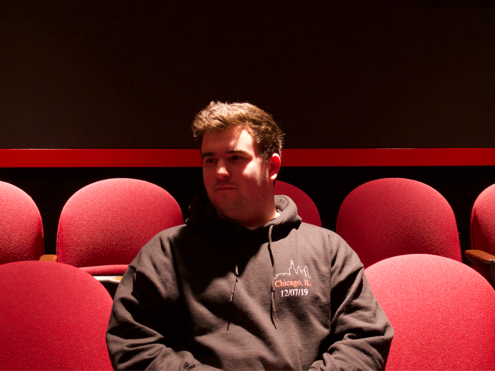
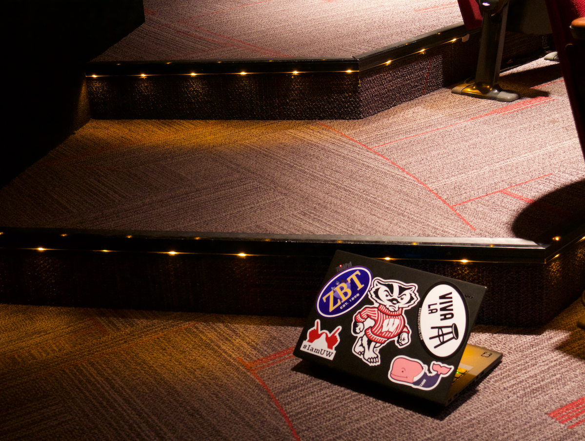
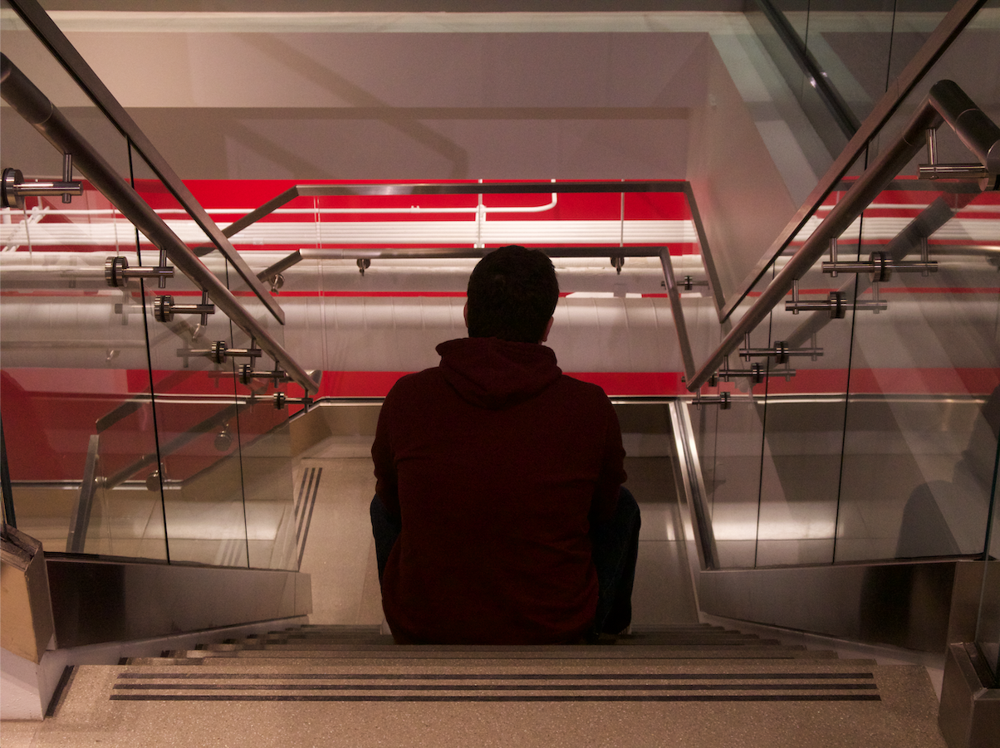
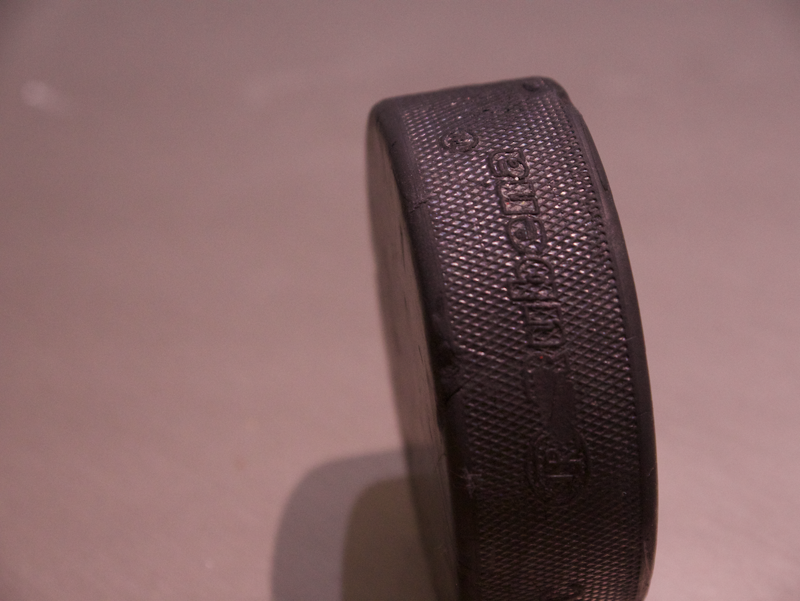
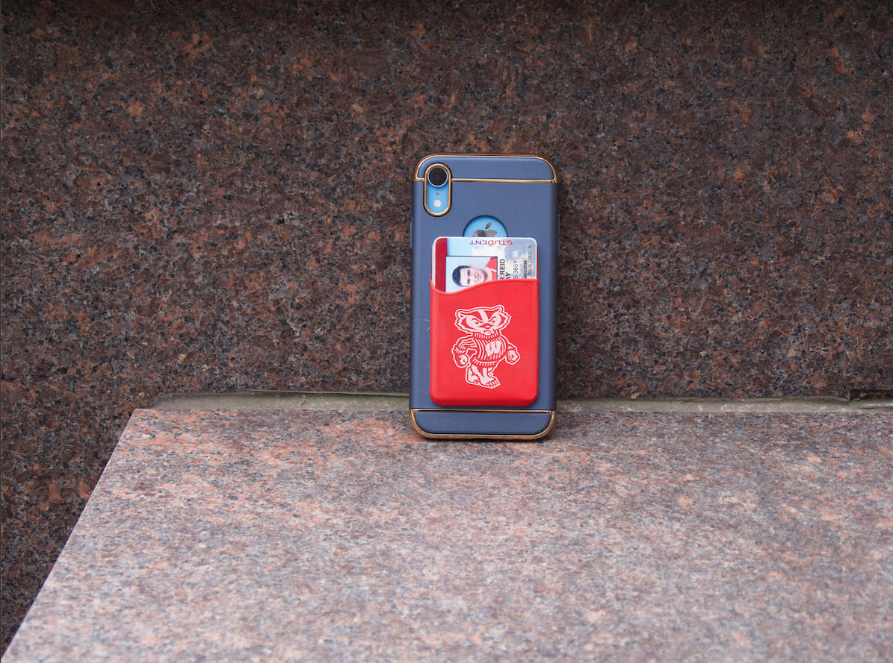
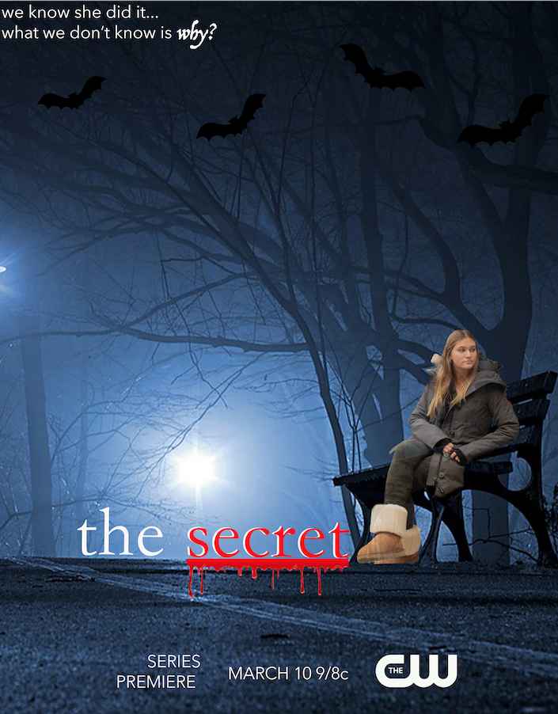

I have always loved taking capturing life through photographs and using online tools to create designs. Below are some photos that I have taken on campus, with an explanation of the elements of photography that I used, along with a poster that I made. Enjoy!
Photographs
Picture #1

This picture was taken in one of the classrooms of Vilas Hall at the University of Wisconsin. I used the low-key lighting of this room to highlight the shadows in his face and the balance of the photo was symmetrical. I particularly liked the contrast between the red and the black in this photo.
Picture #2

This picture was taken in one of the classrooms of Vilas Hall at the University of Wisconsin. I again used low-key lighting and the rule of thirds to highlight my focal point in the bottom third of the photo. My favorite part of this photo is the contrast between the stickers on the computer and the dark background.
Picture #3

This picture was taken in the learning commons of Grainger Hall at the Univeristy of Wisconsin. I like how the light is going against him, making him appear dark and creating a contrast between him and the bright red background. I also like how the viewers eye is drawn to the focal point since it is symmetrically balanced.
Picture #4

This picture was taken in the learning commons of Grainger Hall at the Univeristy of Wisconsin. My favorite part of this picture is the textural balance between the smooth background and the rubbery texture of the hockey puck. I also liked the color contrast between the dark puck and light background, and the shadows that I created in the photo.
Picture #5

This picture was taken outside at the University of Wisconsin. I love the color contrast between the bright phone case and the dark marble background. I also used textural balance between the smooth case and the grainy background.
TV Poster

This is a mock TV poster for a show titled "The Secret", starring myself. I used Photoshop to create this poster. I attempted to create an eerie, mysterious aura in the dark woods to set the scene for my show. I layered myself over the background of the forest, and then layered text, bat graphics, and blood drips on top to add to the suspense. I used a font that fit into the context of my show and added the CW logo to convey that my show fits into the mystery category.